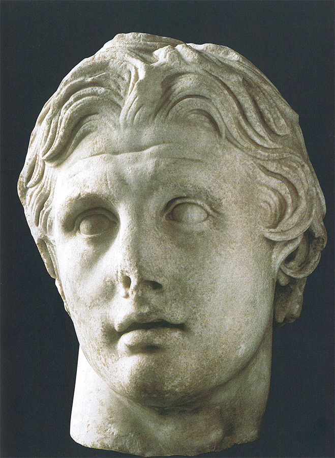
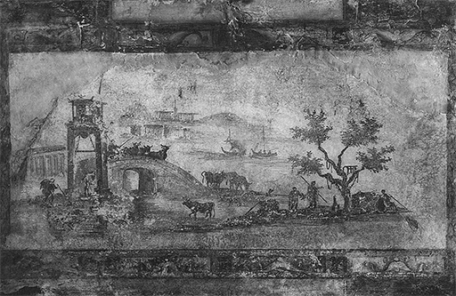

4
EL REINO DE LA BELLEZA
Grecia y el mundo griego, del siglo IV a.C. al I
El gran despertar del arte a la libertad tuvo lugar en los cien años, aproximadamente, que van de 520 a.C. a 420 a.C. Hacia finales del siglo V los artistas han adquirido plena conciencia de su poder y maestría, de los que su público se hizo eco. Aunque los artistas aún eran considerados artesanos y, tal vez, desdeñados por los esnobs, un número creciente de personas comenzaban a interesarse en las obras por sí mismas, y no por sus funciones religiosas o políticas. La gente discutía los méritos de las diferentes escuelas artísticas, esto es, de los diversos métodos, estilos y tradiciones que distinguían a los maestros de cada ciudad. No hay duda alguna de que la comparación y la competencia entre esas escuelas estimulaban a los artistas a esfuerzos cada vez mayores, ayudándoles a forjar la variación que admiramos en el arte griego. En arquitectura, diversos estilos empezaron a ser empleados conjuntamente. El Partenón se construyó en estilo dórico (ilustración 50), pero en los edificios posteriores de la Acrópolis se introdujo el estilo llamado jónico. El principio que rige a esos templos es el mismo del dórico, pero el aspecto y el carácter del conjunto son muy diferentes. El edificio que constituye su más perfecto exponente es el templo dedicado a Poseidón, denominado el Erecteion (ilustración 60). Las columnas del templo jónico son mucho menos fuertes y robustas. Son como ligeros troncos, y el capitel o remate no es mayor que un sencillo y liso cojín, pero ricamente adornado con volutas a los lados, las cuales parecen desempeñar nuevamente la función de la parte que sostiene la viga sobre la que descansa el techo. La impresión de conjunto de esos edificios, con sus pormenores bellamente labrados, es de sosiego y gracia infinita.

60 El Erecteion, Acrópolis, Atenas, h. 420-405 a.C. Templo jónico.
Análogas características predominan en la escultura y la pintura de esta época, que comienza con la generación siguiente a Fidias. Atenas, durante este período, se halló envuelta en una guerra terrible que terminó con su prosperidad y con la de Grecia. En 408 a.C., durante un breve lapso de paz, se añadió una balaustrada esculpida al pequeño templo de la Acrópolis dedicado a la diosa de la victoria; sus esculturas y ornamentación revelan el cambio de gusto hacia la delicadeza y el refinamiento que se refleja también en el estilo jónico. Las figuras han sido lastimosamente mutiladas; sin embargo, escogeré una de ellas (ilustración 61) para mostrar cuánta belleza posee aún incluso esta figura despedazada sin cabeza y sin manos. Representa a una muchacha, una de las diosas de la victoria, deteniéndose a abrocharse la sandalia que se le ha soltado al andar. ¡Cuán deliciosamente ha sido captada esta momentánea detención, y cuán suave y airosamente caen las delgadas ropas sobre el hermoso cuerpo! Podemos observar en estas obras que el artista podía plasmar cuanto deseaba. Ya no tenía que forcejear con dificultad alguna al representar el movimiento o el escorzo. Tal vez le llevara a cierto envanecimiento esta facilidad y virtuosismo. El artista del friso del Partenón (ilustraciones 56 y 57) no pareció preocuparse mucho acerca de su arte o de lo que estaba realizando. Sabía que su tarea consistía en representar una procesión, y se esforzó cuanto pudo en hacerlo bien y con claridad. Difícilmente se daba cuenta de que era un gran maestro, acerca del cual seguirían hablando viejos y jóvenes miles de años después. El friso del templo de la Victoria muestra, quizá, el comienzo de un cambio de actitud. Este artista estaba orgulloso de su inmenso poder tanto como de sus facultades. Y así, gradualmente, durante el siglo IV a.C. la consideración del arte varió. Las estatuas de Fidias fueron famosas en toda Grecia como representaciones de los dioses. Las estatuas del gran templo del siglo IV a.C. merecieron su reputación más bien en virtud de su belleza como obras de arte. La gente culta discutía acerca de las pinturas y las estatuas lo mismo que acerca de los poemas y los dramas; elogiaban su belleza o criticaban su forma y estilo.
61 Diosa de la victoria, 408 a.C. De la balaustrada que rodea el templo de la Victoria en Atenas; mármol, 106 cm de altura; Museo de la Acrópolis, Atenas.
El gran artista de aquel siglo, Praxíteles, fue famoso sobre todo por el encanto de su obra y por el carácter amable y sugestivo de sus creaciones. Su obra más celebrada, cuyo elogio cantaron muchos poemas, representa a la diosa del amor, la joven Afrodita, entrando en el baño; pero esta obra desapareció. Muchos creen que una obra encontrada en Olimpia en el siglo XIX es una obra original de su mano (ilustraciones 62 y 63). Pero no estamos seguros, ya que quizá sólo sea una buena copia en mármol de una estatua de bronce. Representa al dios Hermes sosteniendo a Dionisos niño en su brazo y jugando con él. Si retrocedemos a la ilustración 47, vemos la enorme distancia que ha recorrido el arte griego en doscientos años. En la obra de Praxíteles ha desaparecido toda huella de rigidez. El dios se halla ante nosotros en una postura relajada que en nada ofende su dignidad. Pero si reparamos en cómo consiguió Praxíteles este efecto, advertimos que ni siquiera entonces había sido olvidada la lección del arte antiguo. También Praxíteles procuró mostrarnos los goznes, las junturas del cuerpo, poniéndolos de manifiesto con tanta claridad y precisión como le fue posible. Pero ahora pudo realizar todo esto sin que resultara rígida y envarada su escultura; pudo mostrar los músculos y los huesos dilatándose y moviéndose bajo la piel suave, y pudo dar la impresión de un cuerpo vivo en toda su gracia y belleza. Sin embargo, es necesario darse cuenta de que Praxíteles y otros artistas griegos llegaron a esta belleza merced al conocimiento. No existe ningún cuerpo vivo tan simétrico, tan bien construido y bello como los de las estatuas griegas. Se cree con frecuencia que lo que hacían los artistas era contemplar muchos modelos y eliminar los aspectos que no les gustaban; que partían de una cuidada reproducción de un hombre real y que lo iban hermoseando, omitiendo toda irregularidad o todo rasgo que no se conformara con su idea de un cuerpo perfecto. Hay quien dice que los artistas griegos idealizaban la naturaleza a la manera con que un fotógrafo retoca un retrato eliminando de él los pequeños defectos. Pero una fotografía retocada y una estatua idealizada generalmente carecen de vigor y de carácter. Cuanto más se ha eliminado y borrado, más pálido e insípido fantasma del modelo es lo que queda. El punto de vista griego era precisamente el contrario. A lo largo de todos esos siglos, los artistas de que hemos tratado se ocupaban en infundir más y más vida al antiguo caparazón. En la época de Praxíteles, su método cosechó los frutos más sazonados. Las antiguas tipologías empezaron a moverse y a respirar bajo las manos del hábil escultor, irguiéndose ante nosotros como seres humanos reales, pertenecientes a un mundo distinto y mejor. Son, en efecto, seres que pertenecen a un mundo distinto, no porque los griegos fueran más sanos y más bellos que los otros hombres —no hay razón alguna para creer tal cosa—, sino porque el arte en aquel momento había alcanzado un punto en el que lo modélico y lo individual se mantenían en un nuevo y delicado equilibrio.
62 Praxíteles, Hermes con Dionisos joven, h. 340 a.C. Mármol, 213 cm de altura; Museo Arqueológico, Olimpia.
63 Detalle de la ilustración 62.
Muchas de las más famosas obras del arte clásico que fueron admiradas en épocas posteriores como representativas de los tipos humanos más perfectos son copias o variantes de estatuas creadas en ese período, a mediados del siglo IV a.C. El Apolo de Belvedere (ilustración 64) muestra el modelo ideal de un cuerpo de hombre. Tal como se presenta ante nosotros en su impresionante actitud, sosteniendo el arco con el brazo extendido y la cabeza vuelta hacia un lado como si siguiera con la mirada la flecha disparada, no se nos hace difícil reconocer el ligero eco del esquema antiguo en el que a cada parte del cuerpo se le daba su apariencia más característica.
64 Apolo de Belvedere, h. 350 a.C. Copia romana en mármol de un original griego, 224 cm de altura; Museo Pio Clementino, Vaticano.
Entre las famosas estatuas clásicas de Venus, la de Milo (llamada así por haber sido hallada en la isla de Melos) tal vez sea la más conocida (ilustración 65). Probablemente perteneció a un grupo de Venus y Cupido realizado en un período algo posterior, pero en el cual se utilizaban los recursos y procedimientos de Praxíteles. Esta escultura también fue proyectada para ser vista de lado (Venus extendía sus brazos hacia Cupido), y nuevamente podemos admirar la claridad y sencillez con que el artista modeló el hermoso cuerpo, su manera de señalar cada una de sus divisiones más importantes sin incurrir en vaguedad ni en dureza.
65 Venus de Milo, h 200 a.C. Mármol, 202 cm de altura; Museo del Louvre, París.
Naturalmente, este método de crear belleza comenzando por una configuración esquemática y general a la que se vivificaría paulatinamente hasta que la superficie del mármol pareciera respirar, tuvo un inconveniente. Era posible crear de este modo tipos humanos convincentes, pero ¿conduciría siempre a la representación de verdaderos seres humanos individuales? Por extraño que nos pueda parecer, la idea del retrato, en el sentido en que nosotros empleamos esta palabra, no se les ocurrió a los griegos hasta una época tardía, en el siglo IV a.C. Ciertamente, oímos hablar de retratos realizados en tiempos anteriores (ilustración 54), pero esas estatuas no tuvieron, probablemente, gran semejanza referencial. Un retrato de un general fue poco más que la representación de un apuesto militar con yelmo y bastón de mando. El artista no reprodujo nunca la forma de su nariz, las arrugas de su frente o su expresión personal. Es un extraño hecho, del que no nos hemos ocupado bastante todavía, este de que los artistas griegos —en las obras suyas que conocemos— hayan esquivado conferir a los rostros una expresión determinada. En verdad, esto es mucho más sorprendente de lo que parece a primera vista, puesto que difícilmente garabatearemos nosotros una simple cara en un trozo de papel sin darle alguna expresión acusada (cómica, por lo general). Las estatuas griegas, claro está, no son inexpresivas en el sentido de parecer estúpidas y vacuas, pero sus rostros no parecen traducir nunca ningún sentimiento determinado. El cuerpo y sus movimientos eran utilizados por estos maestros para expresar lo que Sócrates había denominado «los movimientos del alma» (ilustración 58), ya que percibían que el juego de las facciones contorsionaría y destruiría la sencilla regularidad de la cabeza.
En la generación posterior a Praxíteles, hacia la terminación del siglo IV a.C., esta restricción fue desapareciendo gradualmente y los artistas descubrieron maneras de animar las facciones sin destruir la belleza. Más aún, aprendieron a captar los movimientos del alma individual, el carácter particular de la fisonomía, y a practicar el retrato en nuestro sentido actual del término. En la época de Alejandro Magno, la gente comenzó a discutir acerca de este nuevo género. Un escritor de aquel período, satirizando las irritantes costumbres de los aduladores, dice que éstos prorrumpían siempre en ruidosos elogios del gran parecido del retrato de su protector. Alejandro mismo prefirió ser retratado por el escultor de su corte, Lisipo, el artista más famoso de la época, cuya fidelidad al natural asombraba a sus contemporáneos. Se cree que el retrato de Alejandro ha llegado hasta nosotros por medio de una copia (ilustración 66), y en él podemos apreciar cuánto ha variado el arte desde la época del Auriga de Delfos, e incluso desde la de Praxíteles, que tan sólo pertenecía a una generación anterior. Claro está que para juzgar todos los retratos antiguos tenemos el inconveniente de que no podemos dictaminar acerca de su parecido, mucho menor, desde luego, que el que afirmaban los aduladores del relato. Tal vez si pudiéramos ver una instantánea de Alejandro Magno, encontraríamos a éste completamente distinto y sin el menor parecido a como nos lo muestra su busto. Podemos hallar que la figura de Lisipo se parece mucho más a un dios que al verdadero conquistador de Asia. Pero también podemos decir: un hombre como Alejandro, un espíritu inquieto, inmensamente dotado, pero quizá echado a perder por sus triunfos, pudo muy bien parecerse a este busto, con sus cejas levantadas y su expresión enérgica.

66 Lisipo, Cabeza de Alejandro Magno, h. 325-300 a.C. Copia en mármol del original, 41 cm de altura; Museo Arqueológico, Estambul.
67 Capitel corintio, h. 300 a.C. Museo Arqueológico, Epidauro.
El imperio fundado por Alejandro fue un acontecimiento de enorme importancia para el arte griego, pues hizo que se desarrollara en extensión, pasando de ser algo confinado a unas cuantas ciudades pequeñas al lenguaje plástico de casi medio mundo. Este cambio afectó al carácter del último período artístico griego, al que generalmente nos referimos con el nombre de arte helenístico, de acuerdo con la denominación que se da de ordinario a los imperios fundados por los sucesores de Alejandro en territorio oriental. Las opulentas capitales de esos imperios, Alejandría en Egipto, Antioquía en Siria y Pérgamo en Asia Menor, encargaban a los artistas obras muy diferentes de las que ellos estaban acostumbrados a realizar en Grecia. Ni siquiera en arquitectura fueron suficientes las sencillas y sólidas formas del estilo dórico y la gracilidad del jónico. Pasó a preferirse una nueva forma de columna, que había sido inventada a inicios del siglo IV a.C. y que recibió su nombre de la rica ciudad mercantil de Corinto (ilustración 67). En el estilo corintio se añadió el follaje a las volutas jónicas en espiral para adorno de los capiteles; en este estilo la ornamentación es, por lo general, mucho más rica en todo el edificio. Esta lujosa modalidad acompañó a todas las suntuosas construcciones realizadas a gran escala en las ciudades de Oriente de reciente fundación. Pocas de ellas se han conservado, pero lo que quedó de épocas posteriores nos ofrece una impresión esplendorosa y de gran magnificencia. Los estilos e invenciones del arte griego se adaptaron a la escala y a las tradiciones de los imperios orientales.
He dicho que el arte griego se vio obligado a experimentar un cambio en el período helenístico. Este cambio puede registrarse en algunas de las obras más famosas de aquella época. Entre ellas, un altar de la ciudad de Pérgamo erigido hacia 160 a.C. (ilustración 68), con su escultura representando la lucha entre dioses y titanes. Es una obra magnífica, pero inútilmente buscaremos en ella la armonía y el refinamiento de la primitiva escultura griega. Evidentemente, el artista se propuso conseguir efectos de gran fuerza dramática. La batalla se desencadena con violencia terrible. Los burdos titanes son aniquilados por los dioses triunfantes, y se debaten en el dolor y la agonía. Todo está lleno de salvaje movimiento y de agitados ropajes. Para lograr efectos más llamativos, el relieve ya no es plano, sino compuesto de figuras casi exentas y que, en su lucha, parecen desbordarse por la escalera que conduce hacia el altar, como despreocupándose del puesto que les corresponde. El arte helenístico gustó mucho de obras tan bravías y vehementes; quería resultar impresionante, y, efectivamente, lo es.
68 Altar de Zeus en Pérgamo, h. 164-156 a.C. Mármol; Colección Pérgamo del Museo Nacional, Berlín.
Algunas obras escultóricas clásicas que han disfrutado de mayor renombre en épocas posteriores fueron creadas en el período helenístico. Cuando en 1506 se descubrió el grupo de Laocoonte (ilustración 69), los artistas y los coleccionistas quedaron literalmente anonadados por el efecto que les produjo esta trágica obra. Representa la terrible escena que también ha sido descrita por Virgilio en Eneida: el sacerdote troyano Laocoonte exhortó a sus compatriotas a que rechazaran el gigantesco caballo en el que se ocultaban los soldados griegos. Los dioses, al ver frustrados sus planes de destruir Troya, enviaron dos gigantescas serpientes de mar para que se apoderaran del sacerdote y de sus dos infortunados hijos y los estrujaran entre sus anillos. Es ésta una de las más despiadadas acciones perpetradas por los olímpicos contra los pobres mortales, tan frecuentes en las mitologías griega y romana. Nos gustaría saber el efecto que causó esta historia en el artista griego que concibió este impresionante grupo. ¿Quiso hacernos sentir el horror de la escena en la que se hace sufrir a una víctima inocente por haber dicho la verdad? ¿O lo que principalmente deseó fue mostrar su capacidad al representar una lucha terrible y en cierto modo escandalosa entre hombres y bestias? No le faltaron razones para sentirse orgulloso de su arte. La manera en que los músculos del tronco y los brazos acusan el esfuerzo y el sufrimiento de la desesperada lucha, la expresión de dolor en el rostro del sacerdote, el desvalido retorcerse de los dos muchachos y el modo de paralizar este instante de agitación y movimiento en un grupo permanente, han concitado desde entonces la admiración. Pero a veces no puedo por menos que sospechar que éste era un arte que se proponía llamar la atención de un público que disfrutaba también con la visión horrible de las luchas de gladiadores. Acaso es una equivocación poner reparos al artista por tal motivo. Lo probable es que en esa época, la del período helenístico, el arte perdiera en gran parte su antigua conexión con la religión y la magia. Los artistas se preocuparon por los problemas intrínsecos del arte. Por ello, la representación de una lucha dramática semejante con todos sus movimientos, su expresión e intensidad emotiva era precisamente la clase de empresa que había de probar el temple de un artista. Lo injusto o justo del hado de Laocoonte no le preocupó lo más mínimo al escultor.
69 Hagesandro, Atenodoro y Polidoro de Rodas, Laocoonte y sus hijos, h. 175-150 a.C. Mármol, 242 cm de altura; Museo Pio Clementino, Vaticano.
Fue en esta época y en esta atmósfera cuando las personas acaudaladas comenzaron a coleccionar obras de arte, a tener copias famosas si no podían poseer los originales, y a pagar precios fabulosos por aquellas que podían obtener. Los escritores empezaron a interesarse en las cuestiones artísticas y a escribir acerca de la vida de los artistas, a reunir anécdotas acerca de sus modos de ser y a componer guías para los turistas. Muchos de los maestros más famosos entre los antiguos fueron pintores más que escultores, y sólo sabemos de sus obras por lo que podemos hallar en los extractos de libros de arte clásicos que han llegado hasta nuestros días. Sabemos también que esos pintores se hallaban más interesados en los problemas especiales de sus técnicas que en los servicios de su arte a una finalidad religiosa. Tenemos noticias de maestros que se especializaron en temas de la vida corriente, que pintaron la tienda de un barbero o escenas de teatro, pero todos esos cuadros se han perdido definitivamente. El único medio de que podamos formarnos alguna idea del carácter de la pintura antigua es contemplar las pinturas murales y los mosaicos que se han descubierto en Pompeya y en otros lugares. Pompeya fue un lugar de veraneo para los romanos de posición y quedó enterrada bajo las cenizas del Vesubio en el 79. Casi todas las casas y villas de la ciudad contaban con pinturas en sus muros, columnas y panoramas pintados, imitaciones de cuadros y de la escena. Esas pinturas no son, claro está, obras maestras, pero es sorprendente observar cuánta destreza existía en una ciudad pequeña y de más bien escasa importancia. Difícilmente se hallaría nada tan excelente si una de nuestras poblaciones costeras de verano fuera excavada en la posteridad. Los decoradores de interiores de Pompeya y de ciudades vecinas como Herculano y Stabias (Stabiae) explotaban libremente el acervo de las creaciones de los grandes artistas del helenismo. Entre tanta monotonía encontramos a veces figuras de gracia y belleza tan exquisitas como la imagen de la ilustración 70, que representa a una de las Horas cortando una flor mientras danza. O hallamos pormenores como el de la cabeza de un fauno (ilustración 71), de otra pintura, que nos da una idea de la maestría y facilidad alcanzadas por esos artistas en el manejo de la expresión.

70 Doncella cogiendo flores, siglo I. Detalle de una pintura mural en Stabias; Museo Arqueológico Nacional, Nápoles.
71 Cabeza de fauno, siglo II a.C. Detalle de una pintura mural en Herculano; Museo Arqueológico Nacional, Nápoles.
Casi todo lo que puede entrar a formar parte de un cuadro puede hallarse entre esas pinturas murales de Pompeya. Bonitas naturalezas muertas tales, por ejemplo, como dos limones con un vaso de agua, y representaciones de animales. Incluso paisajes había allí. Ésta fue, acaso, la mayor innovación del período helenístico. El arte oriental antiguo no empleó los paisajes sino para situar sus escenas de la vida humana, o las propias de campañas militares. Para el arte griego de la época de Fidias o de Praxíteles, el hombre continuaba siendo el objeto principal del interés del artista. En el período helenístico, época en la que poetas como Teócrito descubrieron el encanto de la vida sencilla entre los pastores, también los artistas trataron de evocar los placeres de la campiña para los viciados habitantes de la ciudad. Esos cuadros no son vistas reales de una casa de campo particular o de un bello paraje. Son más bien conglomerados de todo aquello que constituye una escena idílica: pastores y ganado, santuarios sencillos, casas de campo y montañas en la lejanía (ilustración 72). Cada cosa estaba encantadoramente colocada en esos cuadros, y el conjunto aparecía contemplado desde su aspecto más propicio. Frente a estas obras experimentamos la sensación de que estamos contemplando realmente una escena apacible. Sin embargo, incluso estas pinturas son mucho menos realistas de lo que a primera vista podríamos creer. Si tuviéramos que responder a preguntas impertinentes acerca de la localidad, o tratar de trazar un mapa de ella, advertiríamos de pronto que ello no nos es posible. Ignoramos cuál es la distancia que se supone existe entre la casa de campo y el santuario, ni si éste está cerca o lejos del puente. El hecho es que incluso los artistas helenísticos ignoraban lo que nosotros llamamos las leyes de la perspectiva. La famosa avenida de álamos que se pierde a lo lejos y que todos hemos dibujado en la escuela, no era una empresa vulgar. Los artistas dibujaban pequeñas las cosas alejadas y de gran tamaño las cercanas o importantes, pero la ley de la disminución gradual de los objetos al retirarse, la armazón fija en la distribución de nuestros cuadros, era desconocida en la antigüedad clásica. Se necesitó otro milenio para descubrirla. Por ello, hasta las obras más evolucionadas, más libres y conscientes del arte antiguo conservan siempre algo de aquel principio a que aludimos al describir la pintura egipcia. Incluso aquí, el conocimiento de los lineamientos característicos de los objetos particulares cuenta mucho más que la impresión real recibida por medio de los ojos. Ya hemos advertido que esto no supone falta alguna en las obras artísticas que deba lamentarse o ser menospreciada, puesto que dentro de cualquier estilo es posible alcanzar la perfección artística. Los griegos quebraron los rígidos tabúes del arte primitivo oriental y emprendieron un viaje de descubrimientos para añadir, por medio de la observación, nuevos aspectos a las imágenes tradicionales del mundo. Pero sus obras no se asemejan nunca a espejos en los que quede reflejado cualquier rincón especial de la naturaleza. Dejaron al descubierto siempre la señal de la inteligencia que creó esas obras.

72 Paisaje, siglo I. Pintura mural; Villa Albani, Roma.
Escultor griego trabajando, siglo I a.C. Estampa a partir de la piedra de un anillo helenístico; 1,3 x 1,2 cm; Museo Metropolitano de Arte, Nueva York.